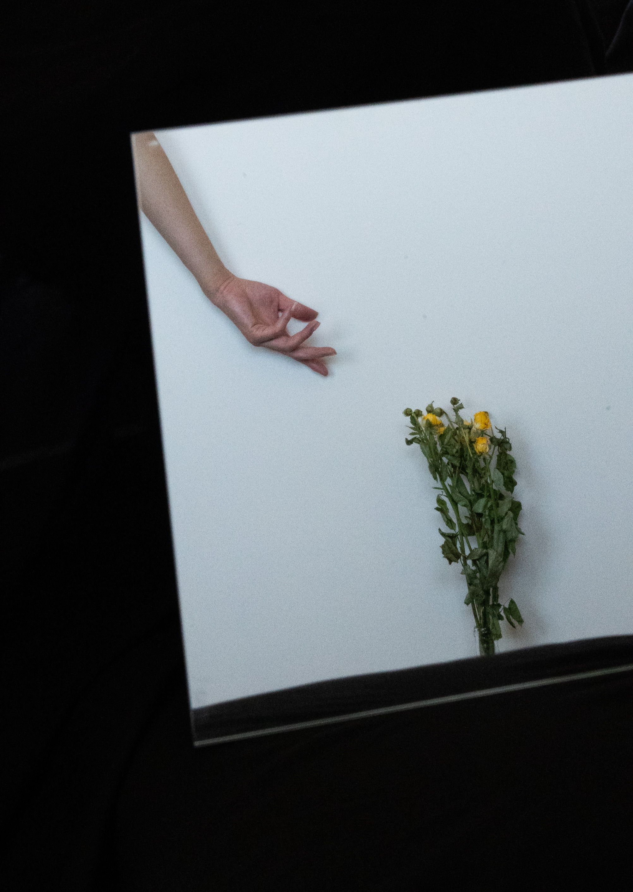

producer | builder | journalist
I’m a visual storyteller who turns complex ideas, systems, and information
into clear, engaging, and human-centered stories.
My work lives at the intersection of editorial storytelling,
visual design, video & social, and technology —
bringing together data, storytelling, and visual thinking to create
experiences people can connect with.
I’ve worked across live news, data visualization, social video, multimedia storytelling,
and newsroom product tools, with work appearing in
CNN, the San Francisco Chronicle, POPSUGAR, and VOGUE China.
You can reach me at tracy.zhang[at]cnn.com